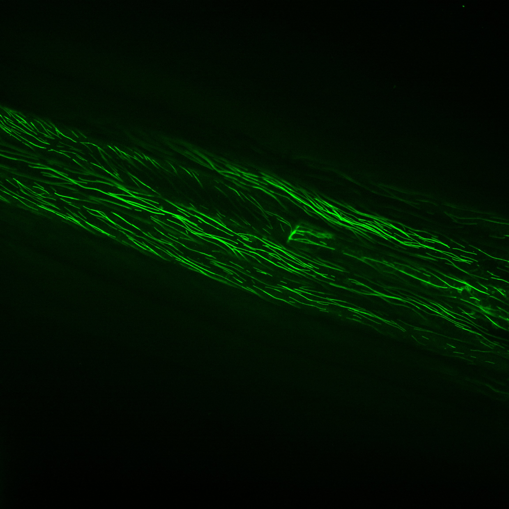
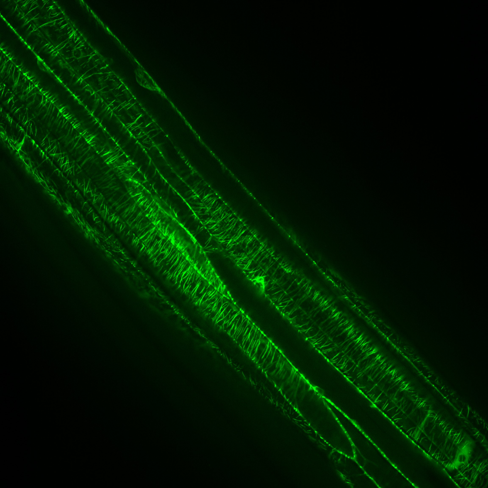

From the Cell to the SAE: Every Mapping in One Diagram
From the real plant cell (confocal microscopy) → Tim's simulator → SAE features → published scalars.
2026-05-20 · companion to docs/findings.html
Step 0 — The biology (what we're trying to explain)
These are GFP-labeled cortical microtubules in Arabidopsis hypocotyl cells under confocal microscopy. The whole pipeline below exists to model the self-organization you see in these images.

Image 1. Single elongated cell with a diagonal MT array. Visible bundles and clear local
waviness. By eye this looks like S₂ ≈ 0.5–0.6 — strong directional preference but plenty of disorder
between bundles.

Image 2. Multiple parallel cells, each with a strongly aligned transverse array — the
fully-saturated case. S₂ probably ≈ 0.85+. Bands tile the cell width with near-perfect parallelism.
This is the endpoint Tim's simulator approaches at long times.
The simulator's job is to reproduce this self-organization from local rules: nucleation, growth,
collisions, anchoring. The interpretability work (SAE, MLP, ablations) sits on top — can we recover the
mechanism that turns randomly-nucleated MTs into the bands you see in image 2? The cascade below
traces how the pipeline operates between these images and the scalar S₂ the field uses to summarize them.
Connection to the four findings: image 1 corresponds to the
early-time / sparse phase that no_zipper stays stuck at (S₂ ~0.56 noise floor). Image 2
corresponds to the saturated baseline regime (S₂ ~0.78 at 1 sim-hour, and presumably higher at 10
sim-hours). The rate at which the system moves from image-1-like states to image-2-like states is
what zippering controls — that's finding 1.
The full cascade
The full pipeline. Six stages from biology to published metric. The 3D plant cell (step 1) is approximated as a cylinder and unrolled to a 2D rectangle with periodic boundaries in x (step 2). The plane is divided into a 26×26 grid of regions, each ~1 simulation unit on a side (step 3). Per region, MT segments contribute to a length-weighted angle histogram across 36 nematic bins (step 4). Histograms feed the SAE for unsupervised feature discovery (step 5). Aggregated across all regions, you get the scalar global readouts that the field actually reports (step 6).
Step 4 → 5 detail: where the SAE lives
The interesting modeling work happens between steps 4 and 5. Step 4 produces ~676 per-region histograms per saved time-point — so each 1hr sim with 10 checkpoints generates ~6,760 of these 36-dim vectors. Pool across multiple sims, conditions, and seeds and you get tens of thousands of samples — enough to train an SAE.
The SAE pipeline in detail. Per-region histograms (step 4 from the cascade above) are pooled across all conditions and seeds to form a (148,114 × 36) training matrix. An SAE with 32 hidden units learns to reconstruct each histogram through a sparse bottleneck. After training, every alive feature has a preferred orientation. The right panel shows what each feature correlates with — they spread vertically (high correlation with cos(2Ω), up to +0.47) and cluster narrowly horizontally (almost no correlation with S₂ magnitude). The SAE found Ω, not S₂.
Where each ablation intervenes in the pipeline
The mapping cascade also explains where each of today's ablations operates. Different interventions touch different stages — and which stages they touch determines what they can possibly show.
Intervention
Touches
What it tests
no_zipper (50/50 cross/catas)
Step 2 (the rule in zip_cat_clean that fires inside the rectangle)
Removes the angle-correlation mechanism without unbounded MT accumulation. The "clean alignment-off control."
always_catas
Step 2 (collision outcome forced to catastrophe)
Sparse MT population. High per-region noise floor — illuminated the small-sample bias finding.
always_cross
Step 2 (collision outcome forced to crossover)
Unbounded MT accumulation (collision rule was also doing density control). Crashed at 4.7 GB.
Neural surrogate (full MLP)
Step 2 substitute (MLP replaces zip_cat output)
Crashed bundle bookkeeping — simulator's downstream (in step 3 / region tracking) is intolerant of approximation in zipper geometry.
Neural surrogate (gated MLP)
Step 2 partial substitute (MLP only decides cross/catas at large incident; deterministic zipper kept)
Works end-to-end. Hybrid rule → baseline-equivalent S₂. Demonstrates the right interface for partial surrogates.
baseline_isotropic / sample_angle patch
(attempted on a code path that's gated by LDD_bool=True)
Was attacking dead code. Default BY-2 mode uses isotropic nucleation in step 2 directly — no sample_angle ever called.
SAE training
Step 5 (no intervention; passive observation)
Rediscovered orientation as the natural feature axis. Unsupervised.